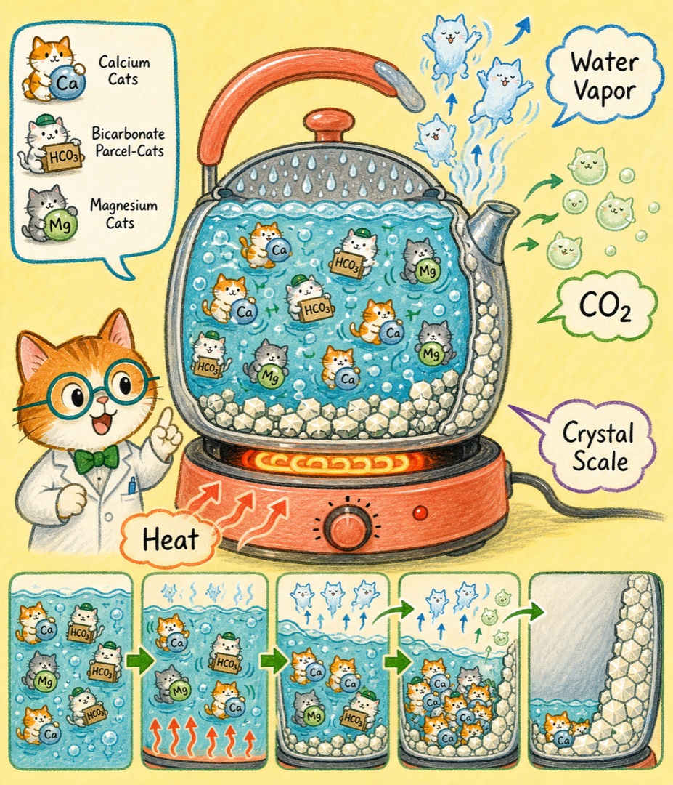
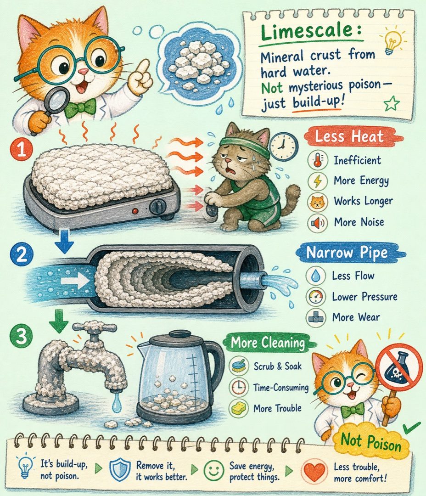
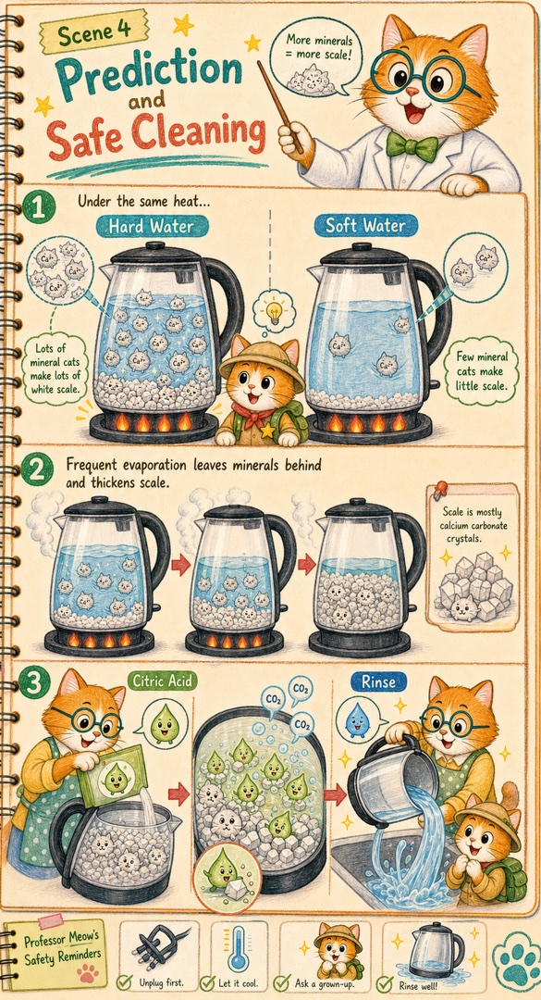
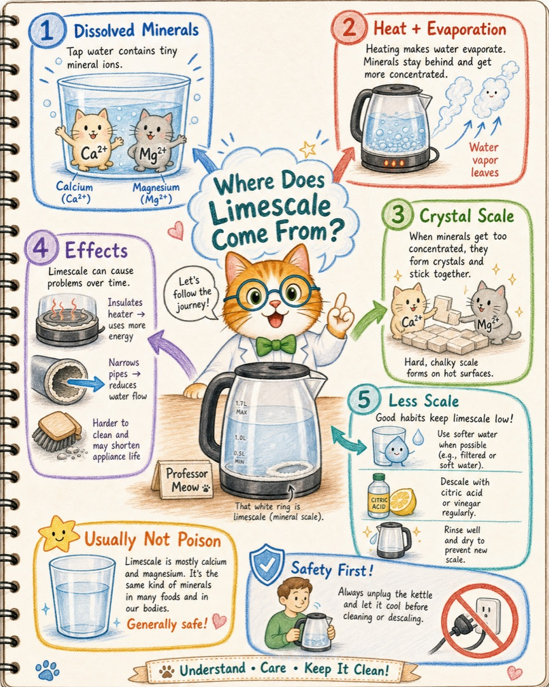

加热变慢
加热面被隔开后，设备可能耗时更久、耗能更多，还可能出现局部过热和噪声。
透明的水里明明什么也看不见，烧过几次以后，壶底为什么会悄悄长出一圈白色硬壳？喵博士和探险家这就把镜头缩小。
在我们的世界里，那其实是透明水队伍里的矿物小猫，从“分散游泳”变成了“抱团铺砖”。
水流过土壤和岩石时，会带走少量钙、镁。它们小得看不见，分别待在水里，所以一杯硬水仍然可以清澈。这样的水被叫作硬水，只是说矿物小猫比较多，不是说水真的摸起来很硬。


Ca²⁺ + 2HCO₃⁻ → CaCO₃↓ + CO₂↑ + H₂O常见白色水垢主要含碳酸钙，也可能混有镁的沉积物和少量其他矿物。水源不同，水垢的组成、颜色和硬度也会不同。

加热面被隔开后，设备可能耗时更久、耗能更多，还可能出现局部过热和噪声。
长期积累可缩小管道、喷头或阀门的通道，使水流变小、设备更容易出故障。
厚水垢会让加热元件和密封部件承受额外负担，增加维修和更换的机会。
杯壁白斑、龙头硬壳和脱落碎片让人不舒服，粗糙表面也更容易藏住污物。
普通饮用水中的硬度和水垢，通常不被认为是有毒的。钙和镁本来就是人体需要的矿物，壶里偶尔掉下一点白色碎屑，也不等于中毒。
但这不代表“有水垢的水一定安全”。水垢只能说明水里有会结晶的矿物，不能替水源做安全证明；微生物、重金属或其他污染物要靠正规水质检测判断。水出现异常颜色、气味、油膜，或来自不明水源时，不要只盯着水垢猜答案。

如果水很软，钙、镁含量低，即使烧水也可能很久看不到明显水垢。含有较多非碳酸盐硬度的水，单靠煮沸也未必能去掉多少硬度。反过来，即使没有烧开，水滴在玻璃上慢慢蒸干，矿物小猫照样会留下白斑。
所以真正的规律不是“只有开水才有水垢”，而是：原本溶解的矿物，因为加热、蒸发、二氧化碳逸出或环境改变，变得难溶并留在表面。
这一步交给大人。先拔掉电源，等设备完全冷却，再按照说明书使用食用级柠檬酸或合适的除垢剂；浸泡后倒掉，并用清水充分冲洗。
不要把酸性除垢剂和含氯漂白剂混合，也不要用硬物猛刮加热面。热水器、咖啡机等结构复杂的设备，要遵循厂家说明。

找两个透明小杯，请大人分别滴入一滴自来水和一滴蒸馏水，放在安全处自然晾干。先猜一猜：哪一滴更可能留下白圈？
这个小观察不会测出水是否安全，却能让我们看看：水离开后，谁还留在原地。下一次，我们还可以继续追踪“为什么肥皂在硬水里不容易起泡”。